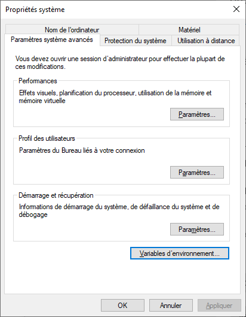

Installation MinGW-W64
> Home > Français > Installation > MinGW-W64
MinGW-W64 - GCC for Windows 64 & 32 bits
Liens
- Page de présentation du projet MinGW-W64
- Page des téléchargements disponibles MinGW-W64
- Page des téléchargements MinGW-W64 via SourceForge
- Téléchargement de MinGW-W64 Online Installer via SourceForge
Installation de MinGW-W64
L'installation démarre en mettant en exécution le programme téléchargé mingw-w64-install.exe.
- Démarrer le programme mingw-w64-install.exe
💡 Copier la ligne de commande
%USERPROFILE%\downloads\mingw-w64-install.exedans la zone de recherche (barre des tâches de Windows) et valider. - Cliquer sur le bouton Next >, poursuivre l'installation...
- Cliquer sur le bouton Next >, poursuivre l'installation...
- Copier le chemin d'installation Destination folder
C:\Program Files (x86)\mingw-w64\i686-8.1.0-posix-dwarf-rt_v6-rev0et le coller dans une fenêtre de navigation Explorateur de fichiers, cela sera utile plus tard. - Cliquer sur le bouton Next >, poursuivre l'installation...
- Cliquer sur le bouton Next >, poursuivre l'installation...
- Cliquer sur le bouton Finish.
Création de la variable d'environnement MINGW32_BIN
La variable d'environnement MINGW32_BIN à créer contiendra le chemin vers les compilateurs GCC et G++, et vers les utilitaires GNU tel que make, etc...
- Ouvrir un Explorateur de fichiers
- Naviguer dans le chemin d'installation de MinGW-W64 précédemment copié...
- Naviguer dans mingw32 puis bin
Le chemin complet jusqu'à bin sera copié dans la variable d'environnement
MINGW32_BINà créer:C:\Program Files (x86)\mingw-w64\i686-8.1.0-posix-dwarf-rt_v6-rev0\mingw32\bin - Ouvrir les Paramètres Windows
- Depuis la page d' Accueil, sélectionner la page Système
- Depuis la page d' Système, sélectionner sur la gauche l'index À propos de
- Sur la droite dans la rubrique Paramètres associés, cliquer sur la commande Paramètres avancés du système
(Cette commande ouvre directement la boîte de dialogue Propriétés système.)
- 💡 ou par la recherche Windows, c'est plus rapide
- Copier Modifier les variables d’environnement système dans la zone de recherche Windows.
(Écrire
varouenvdans la zone de recherche est suffisant.)(Cette recherche ouvre directement la boîte de dialogue Propriétés système.)
- Depuis Propriétés système, modifier les Variables d'environnement

- Cliquer sur le bouton Variables d'environnement...
- Cliquer sur le bouton Nouvelle... dans la section des Variables système
- Saisir le Nom de la variable
MINGW32_BIN - Saisir la Valeur de la variable
C:\Program Files (x86)\mingw-w64\i686-8.1.0-posix-dwarf-rt_v6-rev0\mingw32\bin - Cliquer sur le bouton OK pour valider la saisie.
- Cliquer sur le bouton OK pour fermer la boîte de dialogue.

Vérification du compilateur GCC
Cette vérification confirmera l'accès au compilateur GCC par la variable d'environnement MINGW32_BIN.
- Ouvrir une Invite de commandes
💡 Taper
CMDdans la zone de recherche (barre des tâches de Windows) et valider. - Taper la commande
"%MINGW32_BIN%\gcc.exe" -vet valider.
La dernière ligne affiche la version du compilateur, actuellement 8.1.0.